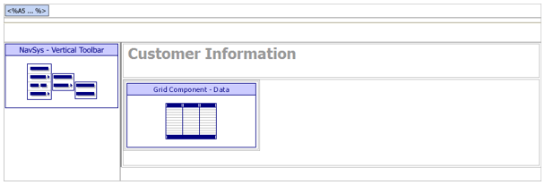
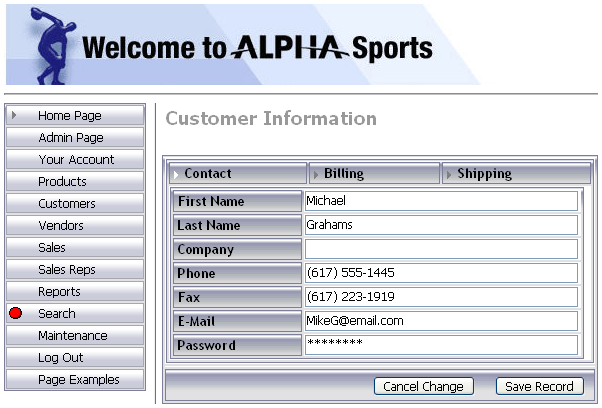

ASWCUSTDET.A5W
Purpose
Administrative users use the ASWCUSTDET.A5W page to view or edit a single customer record.
Links
The Sales > Sales History entry in the NAV_INT navigation component calls the ASWSALESHIST.A5W page. The Customer hyperlink on the Sales by Customer tab displays the ASWCUSTDET.A5W page.
Description
The URL that opens the ASWCUSTDET.A5W page passes a filter to select a specified customer_id. A grid style override allows the grid component to blend in on this page.
The following picture shows the page structure and the outlines of the tables that contain the NAV_INT navigation component and the GRD_CUST grid component. The Xbasic code at the top of the page includes the TOPPAGE.A5W page, providing a standard page header.

ASWCUSTDET.A5W in the WYSIWYG tab of the HTML Editor

ASWCUSTDET.A5W in the Browser
Edits to the Page Source
When you look at ASWCUSTDET.A5W with the Source tab of the HTML Editor, you will see a large amount of HTML and Xbasic code. The HTML Editor placed almost all of it there automatically, as we used the WYSIWYG tab to place the tables, text, graphics, and components on the page. There are a few interesting exceptions, where we changed the page code through the Source tab.
We inserted the following statement after the code that loads the navigation component. This statement captures the name of the navigation component's style in the pgstyle variable.
|
... navigation component code inserted by the HTML Editor pgstyle = tmpl_NAV_INT.style_name
... grid component code inserted by the HTML Editor with tmpl_GRD_CUST ... style_name = pgstyle ... end with |
The A5W_INCLUDE() statement is in the top row of the table. It loads TOPPAGE.A5W and displays a standard page header.
|
<body> <p> <table cellSpacing=0 cellPadding=0 width="800" border=0> <tr> <td colspan="2"> <%a5 a5w_include("toppage.a5w") %> </td> </tr> |
Page Security Information
Login Required
Groups Allowed > Accounting, Administrators, Clerical, Marketing
See Also